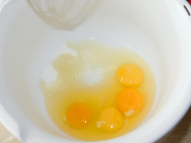
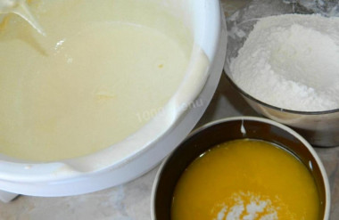
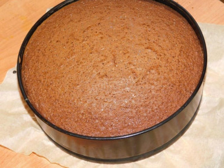
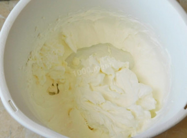
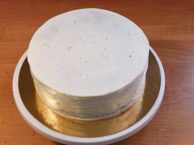
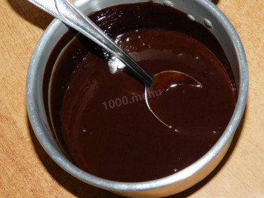
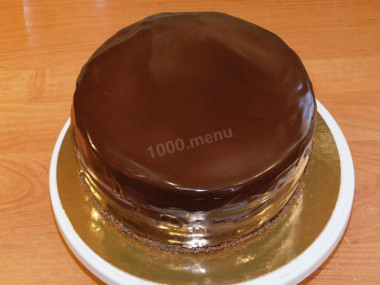

Наивкуснейший, пышный, воздушный, нежный, на праздник! Простой и вкусный шоколадный торт выпекается одним коржом, который потом разрезается. Получается высокий, пропитанный сливочным кремом торт, политый глазурью из шоколада. Украсить его вы можете как угодно: ягодами, фруктами, цукатами, орехами.
| Показатель | Белки | Жиры | Углеводы |
| Процентное соотношение | 7% | 32% | 61% |
| Граммы | 4 грамма | 18 грамм | 35 грамм |

Как сделать простой и вкусный шоколадный торт? Подготовьте ингредиенты. Муку берите высшего сорта. Яйца вымойте и обсушите салфетками. Вбейте яйца в глубокую и широкую миску, добавьте сахар и взбейте все миксером в пышную светлую массу в течение нескольких минут. Как легко взбить яйца и все секреты приготовления бисквита можно узнать в отдельных статьях по ссылкам в конце этого рецепта. Просейте муку в отдельную миску, добавьте в нее соду, перемешайте.

Пока яйца взбиваются, влейте в кастрюлю молоко, поставьте на плиту. Добавьте сливочное масло и доведите молоко до кипения. Дождитесь, чтобы масло полностью растаяло. Поочередно добавляйте к взбитым яйцам мучную смесь и молочную. Обычно хватает 2-3 подхода. Аккуратно вмешивайте (не взбивайте!) все в тесто вручную, с помощью венчика, а лучше силиконовой лопаткой, движениями снизу вверх, чтобы тесто не потеряло свою пышность. Так же аккуратно вмешайте какао.

Тесто перелейте в форму для выпечки (20см). Бортики ничем не смазывайте, иначе бисквит не поднимется. Дно можно смазать растительным маслом. Выпекайте примерно при 180 градусах 45-60 минут. Ориентируйтесь по своей духовке. Готовый бисквит будет пружинить при надавливании. Выньте его из духовки и полностью остудите. Оберните в пищевую пленку и уберите в холодильник на несколько часов, чтобы он отлежался. Перед сборкой торта разрежьте бисквит на 3 коржа.

Для крема используйте сливки жирностью не менее 33% (менее жирные не взобьются). Взбейте охлажденные сливки с сахарной пудрой до пышного, устойчивого крема. Советы, как правильно взбить сливки, читайте внизу под шагами. Приготовьте сироп. Помешивая, доведите в сотейнике воду с сахаром до кипения.Сахар должен полностью раствориться в горячей воде. Горячий сироп снимите с огня и остудите до чуть теплого состояния. При желании можно добавить 1 ст.л. коньяка.

Бисквитные коржи пропитайте сиропом, прослоите кремом и соберите торт. Верх и бока торта также смажьте кремом и постарайтесь выровнять его как можно лучше. Это необходимо, чтобы готовый торт под шоколадной глазурью выглядел ровно. Собранный торт уберите в холодильник на несколько часов.

Для шоколадной глазури поломайте шоколад на кусочки, залейте сливками и поставьте греться. Постоянно размешивая, растопите шоколад и доведите массу до однородности. Снимите массу и добавьте в нее сливочное масло. Перемешайте, чтобы оно растаяло. Если глазурь густовата, то на этом этапе можете добавить немного сливок. Готовую глазурь остудите до комнатной температуры.

Перед тем как заливать торт шоколадом, поставьте его на час в морозилку. Затем полейте торт шоколадной глазурью. Дайте стечь лишнему шоколаду. Низ торта посыпьте тертым шоколадом и выложите на подготовленную поверхность. Будь то тарелка или подложка для торта. Благодаря тому, что торт перед заливкой был немного подморожен, с ним удобно работать и брать его на руку. Готовый торт украсьте по своему вкусу сезонными ягодами или фруктами. Приятного чаепития
Больше рецептов на 1000 menu